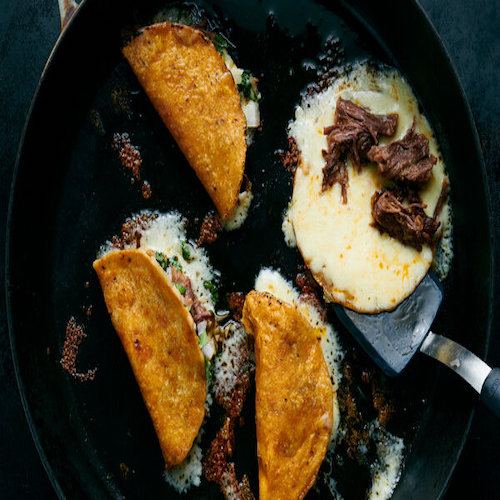

Quesabirria Tacos Recipe
<--- Go Back To Recipes

Description
The little puddle of fat floating on top of a pot of birria is pure gold,
stained red from chiles, and rich with all the concentrated flavors of the
original stew. In other words: Don’t waste it! Instead, spoon the fat off
the top of the broth and reserve it for crisping tortillas to make
quesabirria tacos, pan-fried until crisp, with cheese smushing out of the
edges and browning in the pan. You can enjoy the tacos with salsas or hot
sauce, but the birria meat and cooking oil are so flavorful that a little
cilantro and onion are all you really need.
Ingredients
-
1/4 cup seasoned birria fat plus 1 cup leftover birria meat (both from
Birria de Res)
- 4 corn tortillas
- 1 cup shredded low-moisture cheese, such as Monterey Jack
- 1/4 white onion
- 1 handful fresh cilantro leaves, chopped
- 1 lime, quartered
Instructions
-
Use a spoon to skim the red-stained fat floating on the top of the
birria pot — it’s deeply seasoned and the key to crisp, delicious
tacos — and put it on a plate. Pull the meat and shred it with your
hands, or a fork. (The meat should be very lightly dressed in broth,
but not swimming in it.)
-
Heat a large nonstick or cast-iron skillet over medium. Working
quickly, dip each tortilla into the birria fat on one side then flop
it onto the hot pan, fat-side down. As it starts to sizzle, sprinkle
1/4 cup cheese to cover each tortilla, going all the way to the edges,
then sprinkle about 1/4 cup meat over half of each tortilla.
-
As the tortillas brown and the cheese starts to melt, fold each
tortilla in half to cover the meat, pressing down gently. It’s OK if
some cheese spills out, in fact, it’s encouraged; this leads to lacy,
crispy edges. Manage the heat and flip the tacos as needed to avoid
burning, cooking until crisp on both sides.
-
Just before eating, lift up the taco edge and season each with a
little onion, cilantro and lime juice, to taste.
<--- Go Back To Recipes